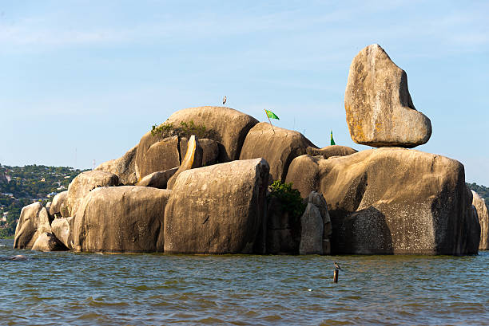
← Back to Day Trips
Mwanza City Tour
Experience the vibrant city of Mwanza with arrangements made by VOT management.


Highlights Include:
- Capri Point Peninsula - Immerse yourself in the city's rich history influenced by German, British, and Indian cultures
- Bismark Rock - Iconic landmark perched atop boulders by the Kamanga ferry harbor
- Rock City Shopping Mall - Tanzania's largest mall with cinema, casino, restaurants, and supermarkets
- Boat Cruise Activities - Available on the shores of Lake Victoria (extra charge)
- International Dining - Visit popular Chinese and Indian restaurants
Additional Sites:
- CCM Kirumba and Nyamagana Stadium (football fans)
- The Hanging Tree in city center
- Mwaloni Fish Market (Eastern & Central Africa's largest)
- Mlango Mmoja & Makorobi (shopping)
- Germany Gunzet House & Indian old buildings
- Maasai Market
- Railway Station
- Bugando Hospital

Bujora Cultural Museum Tour
The Sukuma Museum is a community-oriented organization committed to promoting and honoring the traditional and contemporary arts of the Sukuma culture.
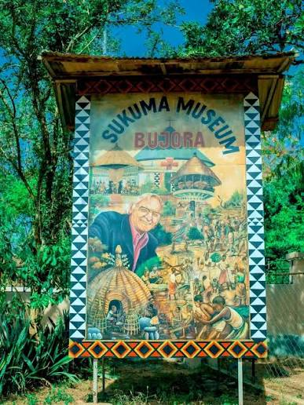
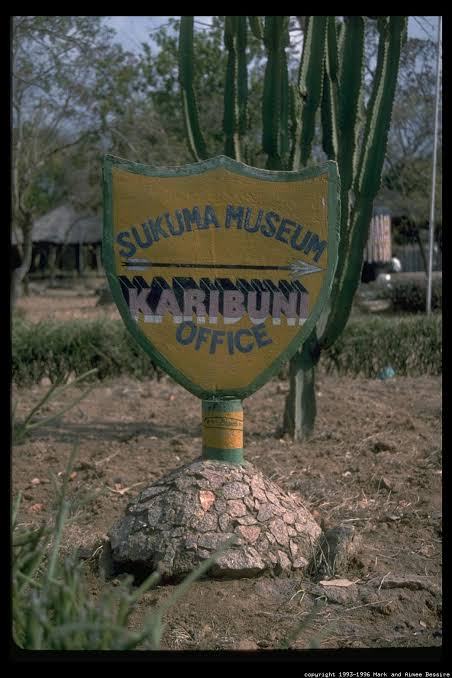
What You'll See:
- Traditional Sukuma dwellings
- Grass house of a traditional healer
- Blacksmith's tools
- Rotating cylinder illustrating Sukuma counting words (1-10)
- Artifacts from ancient Sukuma chiefdoms and dance societies
Special Events:
Home of the famous Bulabo Dance Festival in June, where dancers compete using various animals as props.
Workshops:
Join workshops offering training in traditional Sukuma arts.
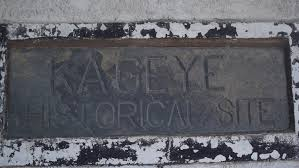
Kageye Historical Site
Located 40 km northeast of Mwanza in the village of Kayenze, this tranquil fishing community was once the most important port on the southern shore of Lake Victoria in the late 19th century.
Historical Significance:
- Once a center for the slave trade until missionaries ended it in 1878
- Managed by the Sukuma Museum
- Tree-filled meadow with various monuments and graves
What to See:
- Traces of one of the oldest Sukuma chiefdoms
- Arab settlements
- Slave market remnants
- Graves of missionaries and travelers
- Remnants from different historical periods
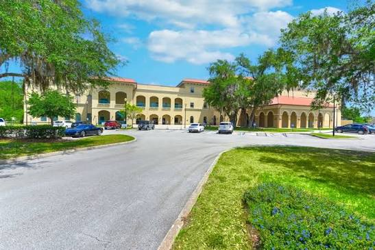
St. Augustine University Visit
Visit SAUT - the largest private university and third largest overall in Tanzania, located just 3 km from VOT Hostel.
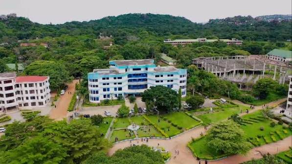
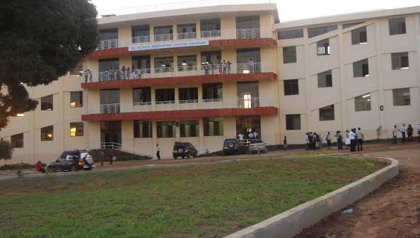
University Facts:
- Founded by Catholic Bishops in 1998 (accredited 2002)
- Over 10,000 students
- Extends over 600 acres in Nyegezi-Malimbe area
- Located 10 km south of Mwanza on Lake Victoria shores
Campuses:
- Main Campus: Administration & Faculty of Business Administration
- Malimbe Campus: Law, Social Sciences, Engineering, Education, and Mass Communication
International Community:
Students from Tanzania, Kenya, Uganda, Sudan, Ethiopia, Burundi, Malawi, Zambia, Germany, and other nations.
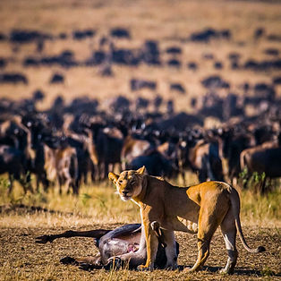
Day Trip to Serengeti
Recognized as one of the 'Seven New Wonders of the World', Serengeti National Park is globally renowned for the spectacular wildebeest and zebra migration.
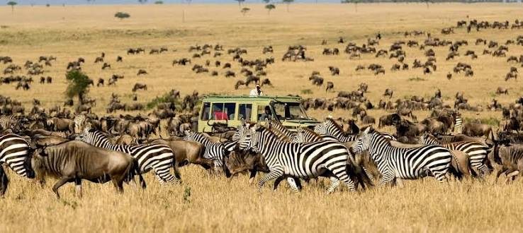
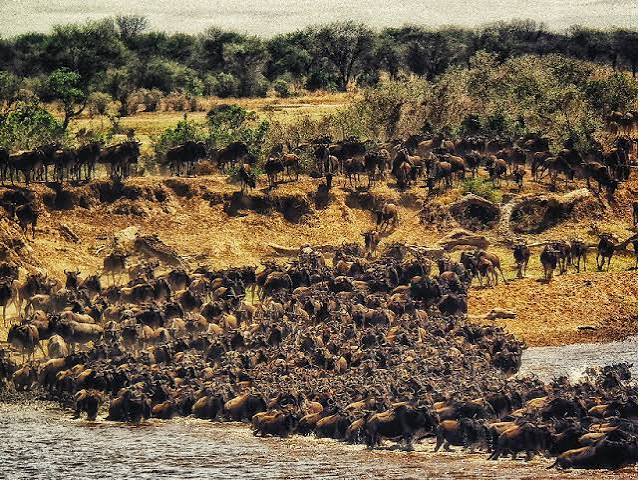
Wildlife Highlights:
- The Big Four (Lion, Leopard, Elephant, Buffalo)
- Diverse bird species unique to the region
- Various reptiles and mammals
- Spectacular wildebeest and zebra migration
Trip Details:
- Just 2-hour drive from Mwanza
- Perfect for those short on time
- Option to extend your visit
- 4WD safari vehicle with expert guide
- Packed lunches/breakfasts and beverages available
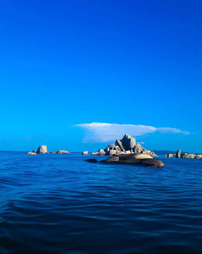
Boat Trip to Ukerewe Island
Visit Africa's largest inland island covering 530 km², located 50 km north of Mwanza in Lake Victoria.
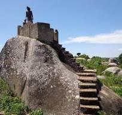
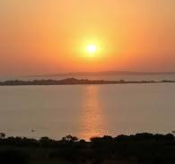
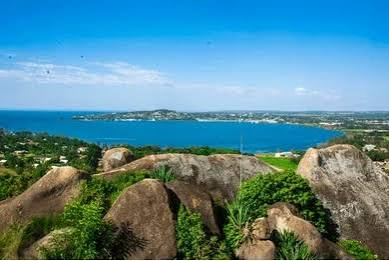
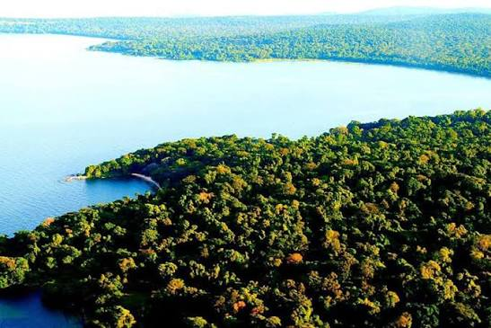
Journey:
- 3-4 hour ferry ride
- 3.8 km vehicle ferry connection
- Surrounded by 27 smaller islands
- Main town: Nansio
Key Attractions:
- Kagunguli: Oldest Roman church built in 1895
- Chief's Palace (Bukindo): Built 1922-1923
- Irondo Point: Great views of Mwanza & traditional dance with Buzegwe band
- Dancing Stone (Ukara Island): Sacred to Kara people
- Forest of Rubya: Largest forest with fishing spots and natural beach
- Rutare Hill: Panoramic views (1 hour by bicycle)
Cultural Activities:
- Traditional dances
- Visit local healers
- Meet local farmers
- Experience simple island lifestyle
Ready to Explore Mwanza?
Whether you're a volunteer with free time or a tourist on a short visit, we can help you experience the best of Mwanza and its surroundings.
Contact us to book your adventure today!
Book Your Tour Now